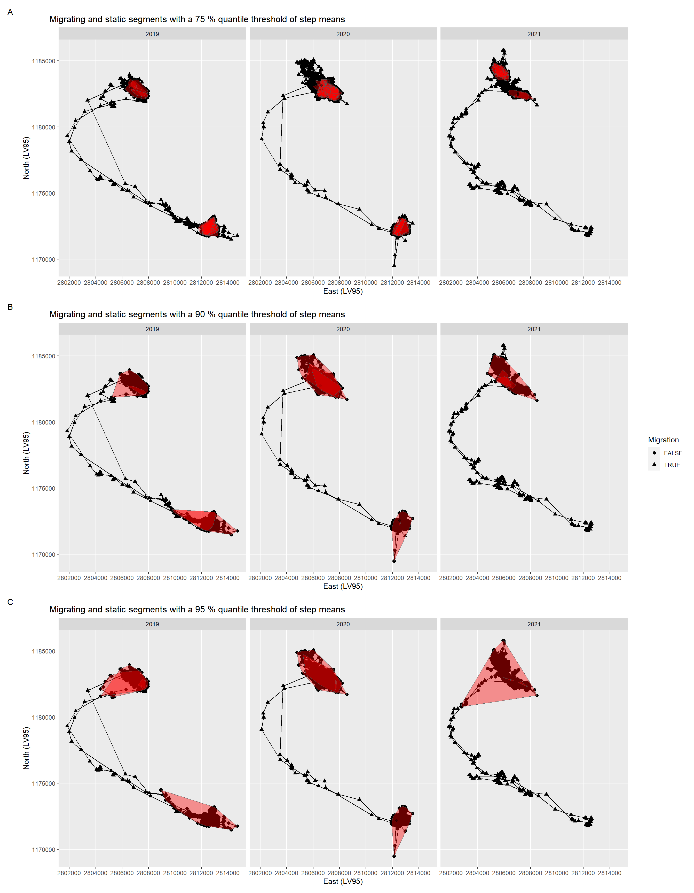

Red Deer Trajectories - A method for Segmentation into Seasonal Homeranges
Report should:
- be written in a scientific writing style.
- around 15’000 characters, not exceed 20’000 (including spaces)
- typically include text, maps, plots, appendices, code and references.
- written using Quarto (see sample File in the template Repo)
Background
The existence of red deer (Cervus elaphus) is affected by feeding, reproduction and the avoidance of predators (Clutton-Brock, Guinness and Albon, 1982). The concept of the «landscape of fear» represents relative levels of predation risk as peaks and valleys that reflect the level of fear of predation a prey animal experiences in different parts of its home range (Laundré, Hernández and Ripple, 2010). Canadian studies on elk (Cervus elaphus canadensis) have shown that in human-dominated landscapes, effects on red deer behaviour caused by human disturbance exceed those of habitat and natural predators (Ciuti et al., 2012). Humans triggered increased vigilance and decreased foraging in elk. Human activity is identified as the strongest driver of red deer movement (Mumme et al., 2023). They highly respond to disturbance from human recreational activities by increasing their level of vigilance, but the nature of their response varies with the level of cover available, and they perceive hunting as a more acute threat than human recreation (Jayakody et al., 2008). Even red deer which appear to be habituated to regular disturbance within their home territory may alter their behaviour and avoid hiking trails (Sibbald et al., 2011). As human activity is mainly concentrated on daytime, red deer can alter their diurnal behaviour, avoid humans during the day and compensate with activity at night (Godvik et al., 2009; Coppes et al., 2017). Red deer populations in highly seasonal environments show partial migration, meaning that there are migratory and resident individuals in one population, but the proportion can vary between populations (Mysterud et al., 2011). Habitat selection of red deer in montane to alpine habitats depends on the stage of green-up, the migrant strategy, landscape characteristics and human presence (Sigrist et al., 2022). During the green-up season migratory individuals have access to higher quality forage than resident. In addition, red deer prefer flat terrain, lower elevation and higher solar radiation, but avoid habitats with possible exposure to human activity, i.e. small distance to roads and trails, great distance to forest or light shrub cover. The onset of hunting triggers stronger fear reactions in red deer, i.e. increased flight initiation distance, increased time spent outside the home range and preference for dense resting sites, what may affect red deer distribution and harvesting efficiency (Meisingset et al., 2022). To protect red deer from hunting and from human disturbance authorities and managers in the Alps designate different types of hunting ban areas (HBA), while the evidence of their effect on red deer behaviour and habitat selection is lacking. However, the arrangement of multiple HBA’s per study area offers an experimental study design to compare habitat selection inside versus outside HBA.
Fellmann… Even though there have been developed several methods to classify migration behaviour of red deer I want to test a self developed method.
Methods
We have GPS locations of red deer in six study areas (fig. 1). For the development of the method I concentrated on only 1 individual. The next step would be to apply the method to many individuals.
Data description
Static and moving phases of trajectories
With the calculation of mean steps in a window of 30 days, at the beginning and in the end of the individual trajectories incomplete steps were generated which I have removed.
Diskussion: - Problem year, weil dann neues mcp im Übergang zum Jahreswechsel - mcp merge
Migrating vs. non-migrating individuals
The calculation of mean steps in a window of 30 days for each location (location now - 15 days to now + 15 days) resulted in step mean thresholds of 953 for a 75 % quantile, 2904 for a 90 % quantile and 4747 for a 95 % quantile and .
Vorteile: - Start nicht abhängig von einem gesetzten Starttermin (!= Ursula: 1. März)
Nachteile: - Verlust der ersten und letzten 15 Tage - Viele Segmente (!= Ursula)